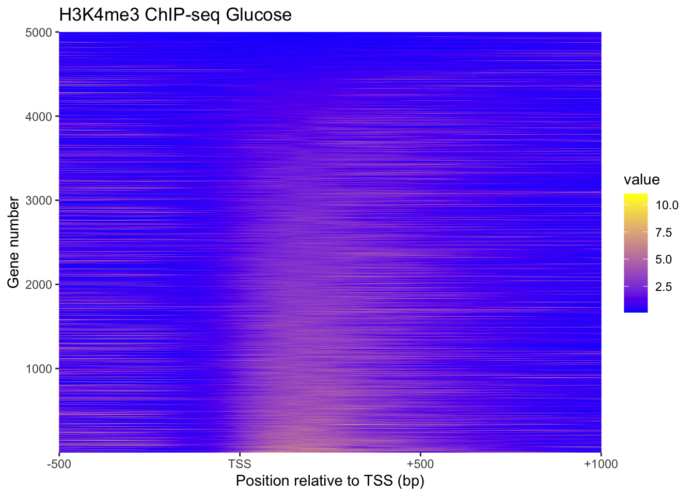
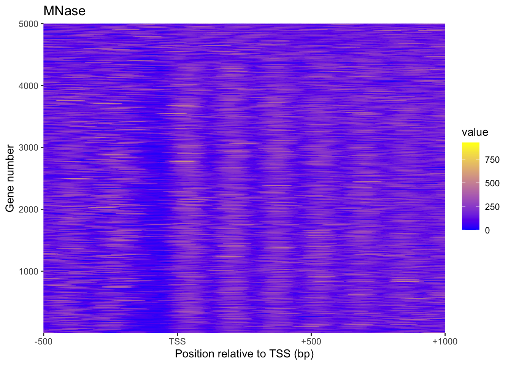
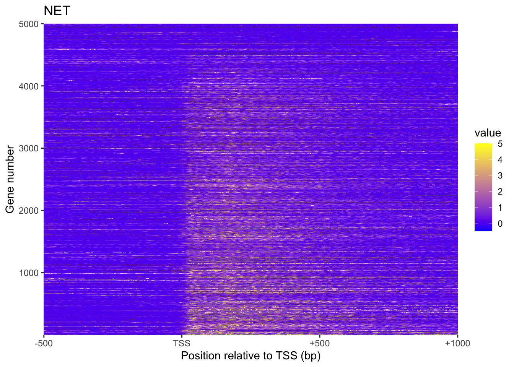
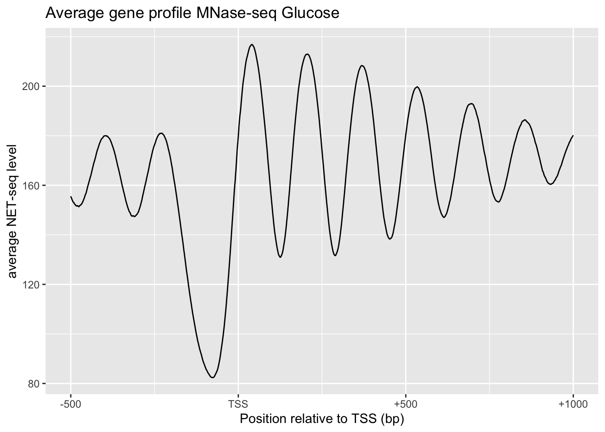
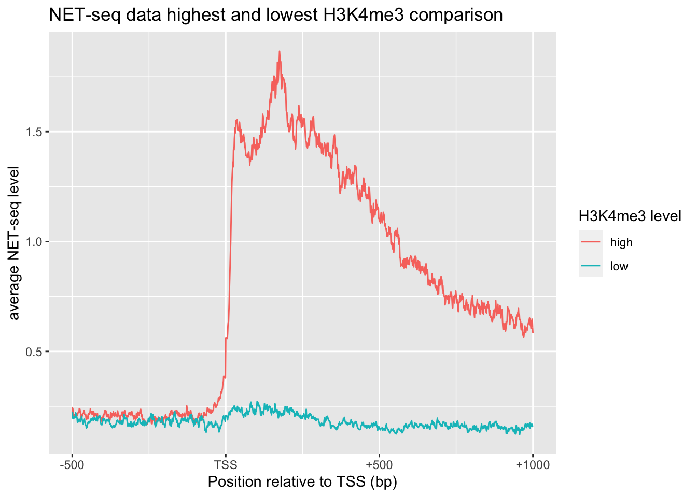
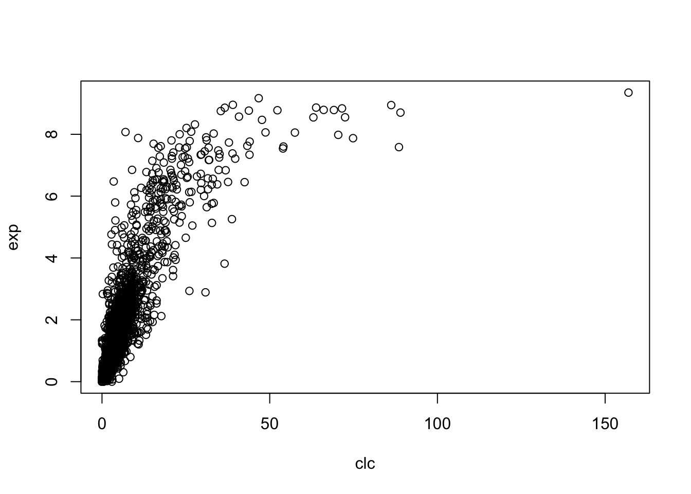

1 Quiz 5
1.1 Heatmaps (using ggplot2 in R)
Loading Packages
library(R.matlab)## R.matlab v3.6.2 (2018-09-26) successfully loaded. See ?R.matlab for help.##
## Attaching package: 'R.matlab'## The following objects are masked from 'package:base':
##
## getOption, isOpenlibrary(reshape2)
library(tidyverse)## ── Attaching packages ─────────────────────────────────────── tidyverse 1.3.0 ──## ✓ ggplot2 3.3.2 ✓ purrr 0.3.4
## ✓ tibble 3.0.4 ✓ dplyr 1.0.2
## ✓ tidyr 1.1.2 ✓ stringr 1.4.0
## ✓ readr 1.4.0 ✓ forcats 0.5.0## ── Conflicts ────────────────────────────────────────── tidyverse_conflicts() ──
## x dplyr::filter() masks stats::filter()
## x dplyr::lag() masks stats::lag()Loading Data
setwd('/Users/tianyishi/Documents/GitHub/ox/content/lab/src/Y2T3W7-genomics')
H3K4me3 <- readMat('H3K4me3_ChIP_seq_glucose_gene_levels.mat')$H3K4me3.ChIP.seq.glucose.gene.levels
MNase <- readMat('MNase_seq_glucose_gene_levels.mat')$MNase.seq.glucose.gene.levels
NET <- readMat('NET_seq_glucose_gene_levels_sense_strand.mat')$NET.seq.glucose.gene.levels.sense.strand
NET[NET < -0.5 | NET > 5] = NAplot_heatmap <- function(mat, title) {
return(
mat %>%
melt() %>%
ggplot(aes(Var2, Var1, fill=value))+
geom_tile()+
scale_x_continuous(expand = c(0,0), breaks = c(1, 501, 1001, 1501), labels = c('-500', 'TSS', '+500', '+1000'))+
scale_y_continuous(expand = c(0,0))+
scale_fill_gradient(low="blue", high = "yellow")+
labs(title=title,
x='Position relative to TSS (bp)',
y='Gene number')
)
}plot_heatmap(H3K4me3, 'H3K4me3 ChIP-seq Glucose')
plot_heatmap(MNase, "MNase")
plot_heatmap(NET, 'NET')
1.2 Heatmaps in Python (with seaborn)
Plotting above heatmaps using ggplot2 in R is very slow. Using seaborn in Python is faster (plots not displayed):
from scipy.io import loadmat
import numpy as np
import matplotlib.pyplot as plt
import seaborn as sns
sns.set()
MNase = np.array(loadmat("MNase_seq_glucose_gene_levels.mat")["MNase_seq_glucose_gene_levels"])
H3K4me3 = np.array(loadmat("H3K4me3_ChIP_seq_glucose_gene_levels.mat")["H3K4me3_ChIP_seq_glucose_gene_levels"])
NET = readMat('NET_seq_glucose_gene_levels_sense_strand.mat')['NET_seq_glucose_gene_levels_sense_strand.mat']
def plot_heatmap(mat, title):
p = sns.heatmap(mat)
p.set(
title=title,
xlabel='Position relative to TSS (bp)', ylabel='Gene number',
xticks=[0, 500, 1000, 1500],
xticklabels=["-500", "TSS", "+500", "+1000"],
yticks=[0, 999, 1999, 2999, 3999, 4999],
yticklabels=[1, 1000, 2000, 3000, 4000, 5000],
)
return p
plot_heatmap(MNase, "MNase seq Glucose")
plt.show()
plot_heatmap(H3K4me3, 'H3K4me3 ChIP-seq Glucose')
plt.show()
plot_heatmap(NET, 'NET-seq Glucose sense strand')
plt.show()1.3 Average Gene Profile
xylabs <- labs(x='Position relative to TSS (bp)', y='average NET-seq level')
xaxis <- scale_x_continuous(breaks = c(0, 500, 1000, 1500), labels = c('-500', 'TSS', '+500', '+1000'))
# Average gene profile MNase-seq Glucose
tibble(x=0:1500, y=apply(MNase, 2, mean)) %>%
ggplot(aes(x, y))+
geom_line()+
xaxis+
xylabs+
labs(title='Average gene profile MNase-seq Glucose')
# NET-seq data highest and lowest H3K4me3 comparison
tibble() %>%
bind_rows(tibble(x=0:1500, y=apply(NET[1:501,], 2, function(x){mean(x, na.rm = TRUE)})) %>% add_column(`H3K4me3 level`='high')) %>%
bind_rows(tibble(x=0:1500, y=apply(NET[4501:5000,], 2, function(x){mean(x, na.rm = TRUE)})) %>% add_column(`H3K4me3 level`='low')) %>%
ggplot(aes(x, y, color=`H3K4me3 level`))+
geom_line()+
xylabs+xaxis+
labs(title='NET-seq data highest and lowest H3K4me3 comparison')
2 Quiz 8
2.1 Matlab
pos=yeast_gene_positions(:,[1,2,5])
% three colomns correspond to chromosome number, direction and TSS
avgs = []
i = 1
for p = pos.'
chr = NET_seq_data{p(1) + 16 * (1 - p(2))};
if p(2)==1
seq = chr(p(3):(p(3) + 299), :);
else
seq = chr((p(3) - 299):p(3), :);
end
avgs(i,:) = mean(seq);
i = i + 1;
end
corr(avgs,yeast_gene_measurements(:,1))2.2 Using R
setwd('/Users/tianyishi/Documents/GitHub/ox/content/lab/src/Y2T3W7-genomics')
pos <- readMat('yeast_gene_positions.mat')$yeast.gene.positions[,c(1,2,5)]
net <- lapply(readMat('NET_seq_genome_wide_data.mat')$NET.seq.data, as_vector)
clc <- apply(pos, 1, function(x){
mean(net[[x[1] + (1-x[2])*16]][x[3]:(x[3]+ifelse(x[2]==0, -1, 1)*299)])
})
exp <- readMat('yeast_gene_measurements.mat')$yeast.gene.measurements[,1]
plot(clc, exp)
cor(clc, exp)## [1] 0.8281284